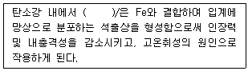
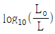
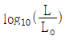
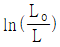
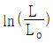
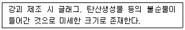
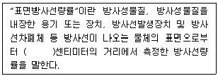

방사선비파괴검사기사 (2020-06-06 기출문제)
1과목: 비파괴검사 개론
1. 동일 조건에서 모세관의 반지름이 2배로 늘어나면 모세관속 액체의 높이는 어떻게 되는가?
- 1/4로 낮아진다.
- 1/2로 낮아진다.
- 2배로 높아진다.
- 4배로 높아진다.
(정답률: 67%)

2. 셀레늄(Selenium) 등의 반도체 뒤에 금속판을 대고 균일한 전하를 준 후 시험체를 투과한 방사선에 노출되면 방사선의 강도에 따라 반도체의 저항이 작아지고 전하가 이동하여 방전하게 되는데, 여기에 반대 전하를 도포하면 육안으로 확인 가능한 영상이 형성되며 이에 적절한 수지를 도포함으로써 영상을 형성할 수 있다. 이 원리를 이용하는 방법은?
- 건식 방사선 투과검사법(Xeroradiography)
- 전자 방사선 투과검사법(Electeron radiography)
- 자동 방사선 투과검사법(Autoradiography)
- 순간 방사선 투과검사법(Flash radiography)
(정답률: 60%)
3. 결함의 유해성에 관한 설명 중 옳은 것은?
- 결함을 가지고 있는 구조물의 강도가 저하하는 양상은 그 결함의 형상과 방향에 따라 다르다.
- 곡면이 있는 결함은 주로 단면적의 감소에 기인하여 강도를 증가시킨다.
- 가늘고 긴 결함은 단면적의 감소 이외에 결함부의 지시 길이에 기인하여 강도를 증가시킨다.
- 표면결함과 내부결함에서 동일종류, 동일치수의 결함이면 내부결함의 경우가 표면결함보다 유해하다.
(정답률: 57%)
4. 비파괴시험 기술자의 임무라 볼 수 없는 것은?
- 시험결과의 정확한 판정
- 제조공정의 철저한 관리
- 제품의 품질보증에 대한 책임
- 시험기술 향상을 위해 꾸준한 노력
(정답률: 82%)
5. 다음 중 발(기)포누설검사법(Bubble Trst)에서 소크시간(soak time)에 해당되는 것은?
- 검사용액을 혼합하고 적용하는데 소요되는 시간
- 검사용액을 적용한 후 관찰할 때까지 소요되는 시간
- 가압의 완료 시점과 용액의 적용시점 사이의 시간
- 시험에 소요되는 총 시간
(정답률: 78%)
6. Mg 합금에 대한 설명으로 틀린 것은?
- 소성가공성이 높아 상온변형이 쉽다.
- 비강도가 커서 항공기나 자동차 재료 등으로 사용된다.
- 감쇠능이 커서 소음방지 재료로 우수하다.
- 구상 흑연주철의 첨가제로 사용된다.
(정답률: 66%)
7. 다음 합금 중 형상기억 효과가 있는 것은?
- Mn-B
- Co-W
- Cr-Co
- Ti-Ni
(정답률: 69%)
8. 재료의 정적 파괴응력보다 작은 응력을 장시간 동안 반복적으로 받는 경우에 파괴되는 현상은?
- 마모
- 피로
- 크리프
- 샤르피
(정답률: 79%)
9. SM45C의 탄소 함유량은 약 몇 %인가?
- 0.045
- 0.12
- 0.45
- 1.2
(정답률: 71%)
10. 다음 중 주석에 대한 설명으로 틀린 것은?
- 화학기호는 Sn이다.
- 상온가공경화가 없으므로 소성가공이 쉽다.
- 비중은 약 10.3이고, 융점은 약 670℃ 정도이다.
- 무독성이므로 의약품, 식품 등의 포장룔, 튜브에 사용된다.
(정답률: 58%)
11. 순철의 냉각에서 A3 변태에 대한 설명으로 옳은 것은?
- 온도는 약 1410℃이다.
- 부피가 감소하는 변화이다.
- 결정구조의 변화를 수반한다.
- 공정 반응이다.
(정답률: 56%)
12. 실루민을 개량처리하는 이유로 옳은 것은?
- 공정점 부근의 주조조직으로 나타나는 Si 결정을 미세화 시키기 위해
- 공정점 부근의 주조조직으로 나타나는 Al 결정을 미세화 시키기 위해
- 공정점 부근의 주조조직으로 나타나는 Zn 결정을 미세화 시키기 위해
- 공정점 부근의 주조조직으로 나타나는 Sn 결정을 미세화 시키기 위해
(정답률: 64%)
13. 다음 ()안에 들어갈 원소는?

- Cu
- S
- Mn
- Si
(정답률: 67%)
14. 금속의 인장시험 시 측정되는 다음 항목들 중 가장 높은 응력 값을 나타내는 것은?
- 인장 강도
- 항복 강도
- 탄성 강도
- 피로 강도
(정답률: 61%)
15. 알루미늄 합금의 질별 기호가 잘못 짝지어진 것은?
- O : 어닐링한 것
- H : 가공 경화한 것
- W : 용체화 처리한 것
- F : 용체화 처리 후 자연시효한 것
(정답률: 56%)
16. 다음 중 노치취성 시험방법이 아닌 것은?
- 슈나트 시험
- 코머렐 시험
- 샤르피 시험
- 카안인열 시험
(정답률: 40%)
17. 아크 용접기의 1차측 입력이 20kVA인 경우 가장 적합한 퓨즈의 용량은? (단, 이 용접기의 전원전압은 200V이다.)
- 10A
- 50A
- 100A
- 200A
(정답률: 66%)
18. 저수소계 피복 아크 용접봉의 건조온도 및 건조시간으로 다음 중 가장 적합한 것은?
- 100~150℃, 30분
- 200~300℃, 1시간
- 150~200℃, 2시간
- 300~350℃, 1~2시간
(정답률: 54%)
19. 가스 금속 아크 용접에서 용융 금속의 이동 형태가 아닌 것은?
- 단락 이행
- 입상 이행
- 롤러 이행
- 스프레이 이행
(정답률: 50%)
20. 용접 작업으로 인하여 발생하는 잔류 응력을 제거하는 방법으로 틀린 것은?
- 솔더링
- 피닝법
- 국부 풀림법
- 저온 응력 완화법
(정답률: 58%)
2과목: 방사선투과검사 원리
21. X선관에 대한 설명으로 틀린 것은?
- X선관의 양극은 금속 표적으로 되어 있다.
- X선관 내에는 고진공으로 되어 있다.
- X선관에서 관전류는 필라멘트에 흐르는 전류에 비례한다.
- X선관에서 양극의 표적에는 열전자를 접속시키기 위한 접속 컵이 있다.
(정답률: 51%)
22. 다음 중 방사선투과 사진에 의한 결함상이 식별되는 조건으로 가장 적절한 것은? (단, △D는 결함에 대응하는 투과사진의 콘트라스트, △Dmin은 결함의 존재를 식별하는 최소의 농도차이다.)
- △D≤△Dmin
- △D=△Dmin
- △D≥△Dmin
- △D=2ㆍ△Dmin
(정답률: 60%)
23. 다음 중 필름을 개봉하였을 때 필름에 미치는 영향이 가장 적은 환경은?
- 황화수소가 발생하는 장소
- 헬륨 가스가 발생하는 장소
- 염산 증기가 발생하는 장소
- 암모니아 가스가 발생하는 장소
(정답률: 78%)
24. 방사선투과검사 시 촬영된 필름에 초승달 모양의 흰 자국이 생기는 경우로 가장 적절한 것은?
- 정착액이 약화되었을 때
- 현상 중 온도 변화가 심할 때
- 촬영 전 필름이 구겨졌을 때
- 촬영 전 필름에 정전기가 발생하였을 때
(정답률: 77%)
25. 다음 중 Se-75에 대한 설명으로 틀린 것은?
- 반감기가 약 120일이다.
- 평균에너지는 약 730keV이다.
- 붕괴 시 γ선을 방출한다.
- 원자로 조사로 방사화하는 경우 중성자포획 단면적이 다른 선원에 비해 작기 때문에 선원을 작게 만드는 것이 곤란하다.
(정답률: 55%)
26. 방사선투과검사에서 사용하는 현상처리액 중 알칼리성인 것은?
- 수세액
- 정착액
- 정지액
- 현상액
(정답률: 67%)
27. X선 필름의 사진 농도를 구하는 식으로 옳은 것은? (단, Lo는 입사광의 강도이고, L은 투과 후의 강도이다.)




(정답률: 61%)
28. 동일한 정격전압과 전류로 고정되어 있는 2대의 X선 장비가 가동되고 있을 때 발생할 수 있는 현상으로 가장 적절한 것은?
- 방사선의 강도 및 선질은 완전히 동일하다.
- 방사선의 강도나 선질이 다르게 발생할 수 있다.
- 방사선의 강도는 동일하지만 선질은 다르게 발생한다.
- 방사선의 선질은 동일하지만 강도는 다르게 발생한다.
(정답률: 55%)
29. 다음 중 I Sv에 해당되는 것은?
- I rad
- I rem
- 100 red
- 100 rem
(정답률: 63%)
30. 다음에서 설명하는 결함은?

- 라미네이션
- 편석
- 수축
- 비금속 개재물
(정답률: 65%)
31. X선 발생장치에 대한 설명으로 틀린 것은?
- 양극의 내구성을 높이기 위해 증기압이 높은 재료를 사용한다.
- 음극에서 전자가 방출되어야 한다.
- 방출된 전자는 높은 운동에너지를 가지도록 가속한다.
- 고속으로 가속된 전자는 타켓에 충돌한다.
(정답률: 67%)
32. 방사성 동위원소의 측정에 사용되는 용어에 대한 설명으로 틀린 것은?
- Ci는 방사능의 강도를 나타내는 단위로, 라듐 1g의 방사능은 1Ci이다.
- 반감기(half-life)는 방사선 강도를 처음 값의 반으로 줄이는데 필요한 물질의 두께를 말한다.
- 비방사능은 방사성 동위원소를 포함하고 있는 물질의 단위 질량당 방사능을 말한다.
- 방사능의 강도는 SI단위로 Bq가 사용되며, 1Bq는 1dps이다.
(정답률: 70%)
33. X선 발생장치의 표적재료(target material)와 X선 발생과의 관계에 관한 설명으로 옳은 것은?
- 표적판은 열을 통해 X선을 발생시키기 때문에 열전도도가 낮아야 한다.
- X선 발생장치의 표적재료는 텅스텐만 사용할 수 있다.
- 표적재료의 원자번호가 높아지면 X선 발생효율이 높아진다.
- 표적재료로 증기압이 높으면 내구성이 우수하여 장기간 사용 가능하다.
(정답률: 53%)
34. 1초 마다 7.4×1011개의 핵이 붕괴되는 Ir192의 방사능 세기는 약 몇 Ci인가?
- 2
- 10
- 20
- 74
(정답률: 60%)
35. 텅스텐 타켓 X선관에 관전압 200kVp를 인가하였을 때의 X선 발생효율은 몇 %인가? (단, 텅스텐의 원자번호는 74이고, 텅스텐의 비중은 19.3이다.)
- 0.407
- 0.814
- 1.628
- 3.256
(정답률: 51%)
36. 반감기가 74일인 동위원소가 50일 경과했을 때의 강도는 처음 강도의 몇 %인가?
- 62.6
- 67.6
- 68.7
- 70.7
(정답률: 42%)
37. 필름 뱃지에 대한 설명으로 틀린 것은?
- 방향에 대한 의존성이 있다.
- 소형으로 가지고 다니기 편리하다.
- 잠상퇴행 현상으로 감도의 변화가 발생한다.
- 선량 측정범위가 열형광 선량계보다 넓고 정확하다.
(정답률: 57%)
38. 방사성동위원소의 붕괴기구 중에서 중성자의 방출이 동반되어 중성자원으로 이용될 수 있는 것은?
- 감마선 방출
- 자발핵분열
- 알파입자의 방출
- 베타입자의 방출
(정답률: 58%)
39. 콤프턴효과가 일어나기 전과 후에 X선의 광량자와 전자사이에 성립하는 법칙으로 옳은 것은?
- 쿨룽의 법칙과 플래밍의 법칙
- 에너지보존법칙과 운동량보존법칙
- 운동량보존법칙과 쿨룽의 법칙
- 쿨룽의 법칙과 에너지보존법칙
(정답률: 64%)
40. 다음 방사성동위원소 중 반감기가 가장 짧은 것은?
- Ir-192
- Cs-137
- Tm-170
- Co-60
(정답률: 58%)
3과목: 방사선투과검사 시험
41. 다음 중 방사선투과사진의 현상처리과정에서 발생된 인공결함이 아닌 것은?
- 반점(Spotting)
- 주름(Frilling)
- 에이벨(Airbell)
- 정전기표시(Static mark)
(정답률: 45%)
42. 감마선 투과시험장치에 주로 사용하는 방사선원의 RHM값으로 옳게 짝지어진 것은?
- Ir-192 : 0.55
- Co-60 : 0.37
- Tm-170 : 1.35
- Cs-137 : 0.003
(정답률: 42%)
43. Ir-192의 에너지가 0.48MeV이고, 이 때 철의 선흡수계수가 0.0462mm-1라면, Ir-192에 대한 철의 반가층은 몇 mm인가?
- 7mm
- 15mm
- 32mm
- 67mm
(정답률: 62%)
44. 현상된 방사선 투과사진은 규정하는 상질을 나타내어야 한다. 다음 중 상질을 확인하는 항목이 아닌 것은?
- 계조계의 값
- 결함의 유무
- 시험부의 사진 농도
- 투과도계의 식별 최소 선지름
(정답률: 69%)
45. 상질계의 같은 의미로 사용되는 것은?
- 형광도계
- 선량계
- 투과도계
- 농도계
(정답률: 73%)
46. 두께 30mm인 검사체를 SFD 300mm로 촬영할 때 기학적인 불선명도 값은 약 얼마인가? (단, 선원의 크기는 2.0mm이고 검사체와 필름사이의 틈은 없다고 가정한다.)
- 0.12mm
- 0.22mm
- 0.32mm
- 0.42mm
(정답률: 57%)
47. 다음 중 방사선투과검사에서 명료도에 영향을 미치는 인자와 가장 거리가 먼 것은?
- 관전류
- 필름의 종류
- 증감지의 종류
- 증감지-필름 접촉상태
(정답률: 57%)
48. 30 Ci인 방사능 물질 A에 대하여 25cm인 철판을 차폐체로 사용했다면, 차폐체를 투과한 후의 강도는 약 몇 Ci인가? (단, 철판에 대한 방사능 물질 A의 반가층은 10cm이다.)
- 1.9
- 2.7
- 5.3
- 10.2
(정답률: 54%)
49. X선 노출도표를 작성할 때, 고정된 조건이 아닌 것은?
- 제품의 두께
- 필름의 종류
- 현상조건
- 선원-필름간 거리
(정답률: 39%)
50. 다음 방사성동위원소 중 평균에너지가 가장 낮은 것은?
- Se-75
- Co-60
- Ir-192
- Cs-137
(정답률: 41%)
51. 엑스선 노출도표에서 관전압이 높은 선에 대한 설명으로 옳은 것은?
- 노출도표의 좌측편에 위치하고 기울기가 크다.
- 노출도표의 좌측편에 위치하고 기울기가 작다.
- 노출도표의 우측편에 위치하고 기울기가 크다.
- 노출도표의 우측편에 위치하고 기울기가 작다.
(정답률: 37%)
52. 감마선 투과사진에 나타나는 주조품 결함의 종류에 해당하지 않는 것은?
- 기공
- 언더컷
- 균열
- 모래 개재물
(정답률: 53%)
53. ClassⅡ 필름을 사용, 10mA-min(분)의 노출시간을 주어 촬영하니 필름의 농도가 1.0이었다. 동일한 필름을 사용하여 필름의 농도가 2.5로 되기 위한 노출시간 약 얼마인가? (단, 필름농도 1일 때 상대 노출 log 값은 2.23, 2.5일 때 상대 노출 log 값은 2.62이다.)
- 15mA-min
- 24.5mA-min
- 35.5mA-min
- 45mA-min
(정답률: 44%)
54. 방사선을 이용한 두께측정 방법을 설명한 내용으로 틀린 것은?
- 측정하고자 하는 부분에 동일 재질이 스텝웨지를 놓고 동시에 촬영하는 방법이다.
- 스탭웨지를 측정하고자 하는 부위에 밀착시켜 주변과의 방사선 강도차에 의한 오차를 줄여야 한다.
- 필름의 농도와 스텝웨지의 두께에 대응하는 곡선을 그려 시험체의 농도를 비교하여 두께를 측정한다.
- 사용전압은 가능한한 높게 하여 관용도를 증가시켜 여러 범위의 두께를 측정할 수 있게 한다.
(정답률: 49%)
55. 방사선투과검사를 할 때 사용되는 선형 투과도계의 주된 용도는?
- 결함의 크기 측정
- 필름의 콘트라스트 결정
- 사진농도의 결정
- 투과사진의 상질 판정
(정답률: 70%)
56. 용접부에서 발견되는 별 모양의 결함은 다음 중 어느 것인가?
- 크레이터 균열
- 라미네이션
- 피로 균열
- 슬래그 개재물
(정답률: 58%)
57. 엑스선 발생장치에 대한 설명으로 틀린 것은?
- 관전류가 높아지면, 투과력이 증가한다.
- 관전류가 높아지면, 강도가 증가한다.
- 관전압이 높아지면, 투과력이 증가한다.
- 관전압이 높아지면, 강도가 증가한다.
(정답률: 44%)
58. 방사선투과검사에서 선원으로 X선발생장치 대신 감마선장치를 사용할 때의 특징이 아닌 것은?
- 협소한 장소에 접근성이 좋다.
- 전원이 필요 없다.
- 소형 경량으로 이동성이 좋다.
- 명암도가 좋다.
(정답률: 72%)
59. 방사선투과검사 시 사용하는 방사성 동위원소의 붕괴형태가 아닌 것은?
- 전자포획
- 감마선 방출
- 하전입자의 충돌
- 베타입자 방출
(정답률: 42%)
60. 방사선투과검사가 초음파탐상검사에 비하여 효과적인 경우는?
- 재질경계 부위와 같은 재질변화를 검출하고자 하는 경우
- 피로균열과 같은 미세한 표면결함을 검출하고자 하는 경우
- 기공과 같은 구형결함을 검출하고자 하는 경우
- 라미네이션과 같은 면상 결함을 검출하고자 하는 경우
(정답률: 46%)
4과목: 방사선투과검사 규격
61. 강 용접 이음부의 방사선투과 시험방법(KS B 0845)에 따라 모재의 두께가 20mm인 강판맞대기 용접부의 A급 투과사진의 식별 가능한 투과도계의 최소 선지름(mm)은?
- 0.25
- 0.40
- 0.42
- 0.64
(정답률: 40%)
62. 원자력안전법령상 방사선장해를 방지하기 위하여 원자력관계사업자가 취하여야 할 조치사항이 아닌 것은?
- 방사선량 및 방사성오염의 측정
- 건강진단
- 피폭관리
- 방사성물질의 누출량을 낮게 유지
(정답률: 56%)
63. 원자력안전법령상에 따른 판독특이자가 아닌 것은?
- 선량한도 이내로 방사선에 노출된 사람
- 선량계의 훼손으로 인해 선량판독이 불가능하게 된 사람
- 선량계의 분실로 인해 선량판독이 불가능하게 된 사람
- 선량계 교체 주기를 2개월 이상 지난 후 선량계를 제출한 사람
(정답률: 65%)
64. 보일러 및 압력용기에 대한 방사선투과검사(ASME Sec.V Art.2)에서 규정한 X선(단일필름)촬영 시 필름농도허용범위로서 옳은 것은?
- 1.8~4.0
- 0.6~4.0
- 1.3~3.5
- 2.0~2.5
(정답률: 58%)
65. 원자력안전법령상 방사성동위원소 등의 사용자가 기록하여야 할 사항과 그 기록의 보존기간이 옳은 것은?
- 방사성동위원소 등의 기록사용-10년
- 자체처분한 방사성폐기물의 종류 및 수량-10년
- 배기구 및 배수구에서의 방사성물질의 농도-10년
- 방사선작업종사자로 근무한 기간 중의 건강진단 기록-10년
(정답률: 47%)
66. 원자력안전법령상 방사선작업종사자에 대한 연간 유효선량한도는 얼마인가?
- 150mSv
- 50Sv
- 150Sv
- 50mSv
(정답률: 61%)
67. 보일러 및 압력용기에 대한 방사선투과검사(ASME Sec.V Art.22 SE-94)에 규정된 촬영투과사진 현상 시 적정 세척 온도 범위는?
- 10~30℃
- 16~30℃
- 16~40℃
- 25~40℃
(정답률: 60%)
68. 방사선량 단위 사용의 연결이 틀린 것은?
- 조사선량-렌트겐(R)
- 흡수선량-그레이(Gy)
- 등가선량-라드(rad)
- 유효선량-시버트(Sv)
(정답률: 50%)
69. 주강품의 방사선투과검사 방법(KS D 0227)에서 시험부의 공칭 두께가 20mm였다면, 1류에 허용되는 모래 박힘의 최대 치수는?
- 6.0mm
- 8.0mm
- 10.0mm
- 12.0mm
(정답률: 45%)
70. 다음 중 방사선에 대한 반가층의 두께가 가장 얇은 차폐체는?
- 알루미늄
- 철
- 콘크리트
- 납
(정답률: 67%)
71. 강 용접 이음부의 방사선투과시험방법(KS B 0845)에 따라 결함을 분류할 때 제3종의 결함이 존재하는 경우의 결함 분류는?
- 1류
- 2류
- 3류
- 4류
(정답률: 50%)
72. 강 용접 이음부의 방사선투과 시험방법(KS B 0845)에서 모재 두께 24mm인 경우 제1종 결함에 대한 시험 시야로 옳은 것은?
- 10×10mm
- 15×15mm
- 10×20mm
- 10×30mm
(정답률: 42%)
73. 보일러 및 압력용기에 대한 방사선투과검사(ASME Sec.V Art.2)에 따라 방사선 촬영기법에 관한 상세 정보를 문서화할 때, 포함하도록 규정된 항목이 아닌 것은?
- 모재 종류 및 두께
- 가하하적불선명도 값
- 사용한 동위원소 종류
- 방사선투과사진 촬영 횟수
(정답률: 43%)
74. 보일러 및 압력용기에 대한 방사선투과검사(ASME Sec.V Art.2)에서 2인치 미만의 강을 검사하는 경우 기하학적 불선명도의 최대치는?
- 0.004인치
- 0.02인치
- 0.04인치
- 0.07인치
(정답률: 52%)
75. 강 용접 이음부의 방사선 투과 시험 방법(KS B 0845)에서 바깥지름 100mm 원둘레 이음 용접부의 2종벽 단일면 촬영방법 중 가로 균열의 검출을 특히 필요로 하는 경우 시험부의 유효길이로 적당한 것은?
- 50mm
- 65mm
- 70mm
- 75mm
(정답률: 53%)
76. 다음 중 원자력안전법령상의 방사선 관리구역에 해당하지 않는 곳은?
- 외부 방사선량률이 1주당 400마이크로시버트 이상인 곳
- 수 중의 방서성 물질의 농도가 최대허용수중 농도의 1/10 이상인 곳
- 공기 중의 방사성 물질의 농도가 유도공기 중 농도기준을 초과하는 곳
- 물체 표면의 오염도가 허용표면오염도를 초과하는 곳
(정답률: 45%)
77. 감마상수를 설명한 것으로 옳은 것은?
- 감마선 핵종 1Ci로 부터 1mm 떨어진 곳에서의 방사선량률
- 감마선 핵종 1Ci로 부터 1cm 떨어진 곳에서의 방사선량률
- 감마선 핵종 1Ci로 부터 1m 떨어진 곳에서의 방사선량률
- 감마선 핵종 1Ci로 부터 1km 떨어진 곳에서의 방사선량률
(정답률: 49%)
78. 다음은 원자력안전법령에서 정의한 내용이다. 다음 ()안에 들어갈 내용으로 옳은 것은?

- 1
- 5
- 10
- 50
(정답률: 59%)
79. 보일러 및 압력용기에 대한 방사선투과검사(ASME Sec.V Art.22 SE-1025)에 규정된 직사각형 상질계의 재료그룹에 해당되지 않는 것은?
- 아연
- 티타늄
- 마그네슘
- 알루미늄
(정답률: 59%)
80. 보일러 및 압력용기에 대한 방사선투과검사(ASME Sec.V Art.22 SE-94)에 규정된 필름 정착 시 헹거를 교반하는 방법은?
- 10초간 수직 교반시키고 30초 경과 후 재교반시킨다.
- 10초간 수직 교반시키고 1분 경과 후 재교반시킨다.
- 30초간 수직 교반시키고 30초 경과 후 재교반시킨다.
- 30초간 수직 교반시키고 1분 경과 후 재교반시킨다.
(정답률: 34%)